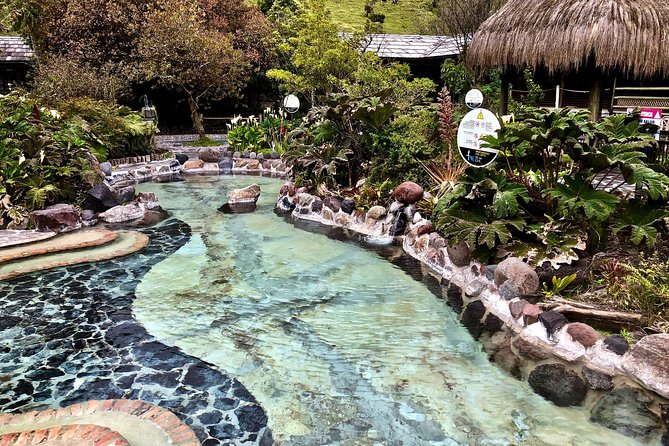

Excurciones
Aguas termales
Descripción general Este tour privado le permite visitar el área volcánica de Papallacta con aguas termales ubicadas a 3250 msnm (10600 pies). Disfrutará de las piscinas de agua caliente en el mejor complejo turístico con más de 6 piscinas. Durante la hora del baño, observará el impresionante paisaje del bosque andino y la cordillera oriental, que conduce a la selva amazónica. Este tour también incluye la visita a Guango Lodge, uno de los mejores lugares en Ecuador para la observación de aves. ¡Explorará la reserva con su guía turístico observando helechos gigantes, orquídeas, bromelias, anturios y más de 14 especies de colibríes!
Laguna Cotopaxi
Disfruta de los volcanes y cráteres más populares de Ecuador en solo un día desde la ciudad de Quito. Este es un recorrido perfecto para las personas que aman la aventura y las actividades al aire libre. El viaje está lleno de naturaleza, vida silvestre y una impresionante vista panorámica. Cruzaremos gran parte de la avenida los volcanes, pueblos o aldeas. En el camino, hay campos de maíz, papa y cebada ubicados al pie de las escarpadas colinas. Las comunidades indígenas que se encuentran al lado de las carreteras muestran su gastronomía, cultura y formas de vida y trabajo.

Piscinas Termales de Papallacta
Tómese un descanso de la ciudad para disfrutar de un poco de descanso y relajación en una excursión privada de un día al balneario Termas de Papallacta. Irás de excursión por las montañas de los Andes a un ritmo establecido por ti y tu grupo antes de disfrutar del tiempo libre para sumergirte en las aguas termales. Además, este recorrido privado le brinda la libertad y flexibilidad para personalizar su itinerario . Disfrute de tiempo para descansar y rejuvenecer en una excursión privada de un día a Termas de Papallacta Spa . Dejar que otra persona conduzca significa que puedes admirar el paisaje montañoso . Benefíciese de la atención exclusiva de su guía privado . Recogida y regreso al hotel significa que no tiene que encontrar un punto de encuentro